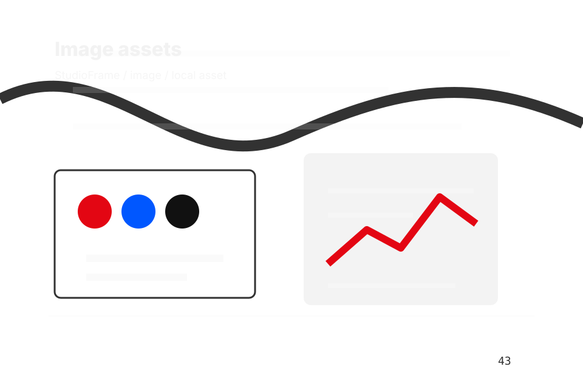

<!-- Source partial: Typographic work hero. -->
<section id="section-hero" class="section hero-section hero-typographic-work-hero composition-typographic-work-hero" data-section="Hero" data-composition="Typographic work hero" data-hero-type="Typographic work hero" data-track="section_home_hero">
  <div class="container hero-grid">
    <div class="hero-copy">
      <p class="eyebrow">Home / 01</p>
      <h1>StudioFrame</h1>
      <h2>A creative portfolio with identity-led project tiles, typographic scale, lightbox logic, and studio enquiry</h2>
      <p class="lead">StudioFrame brings visual production taste guidance to the opening route, with practical context for creative, design &amp; visual production decisions and a clear route to the next step.</p>
      <p>StudioFrame connects the opening route with practical proof, useful comparisons, and the questions creative, design &amp; visual production visitors bring to the page. Visitors can scan the essentials, understand the tradeoffs, and decide whether to start project or keep exploring. The rhythm is built for action without removing the context people need to trust the decision.</p>
      <div class="button-row">
        <a class="button primary" href="../contact.html" data-track="cta_home_hero">Start Project</a>
        <a class="button secondary" href="https://ash-tra.com/discovery/" data-track="secondary_home_hero">Discuss build</a>
      </div>
      
      <div class="hero-proof" aria-label="Trust notes">
        <span>Curated index</span><span>Project context</span><span>Enquiry path</span>
      </div>
<div class="container signature-panel signature-portfolio" data-signature="portfolio" data-page="home" data-section-key="hero">
    <div>
      <p class="eyebrow">Typographic work hero</p>
      <h3>Open the portfolio</h3>
      <p>Select a path and StudioFrame keeps the next step, proof, and follow-up expectation aligned with taste and production trust.</p>
    </div>
    <div class="signature-controls" role="group" aria-label="Portfolio filter, project lightbox, file/brief upload">
      <button type="button" data-option="browse" aria-pressed="true">Browse</button><button type="button" data-option="select" aria-pressed="false">Select</button><button type="button" data-option="enquire" aria-pressed="false">Enquire</button>
    </div>
    <output data-signature-output aria-live="polite">Browse route selected for StudioFrame.</output>
  </div>
    </div>
    <figure class="hero-media target-media target-kind-design target-profile-pentagram">
      <div class="target-stage target-design target-profile-pentagram" aria-hidden="true">
  <div class="editorial-plate"><span>StudioFrame</span><strong>Home</strong></div>
  <ol class="editorial-index"><li><span>01</span><b>Positioning</b></li><li><span>02</span><b>Problem</b></li><li><span>03</span><b>Promise</b></li><li><span>04</span><b>Work</b></li></ol>
</div>
      <picture>
        <source media="(max-width: 640px)" srcset="../assets/images/hero/creative-home-hero-mobile.svg">
        <source media="(max-width: 1024px)" srcset="../assets/images/hero/creative-home-hero-tablet.svg">
        
      </picture>
      <figcaption>Brand systems, posters, design boards, case images expressed through a custom static visual system.</figcaption>
    </figure>
  </div>
</section>
